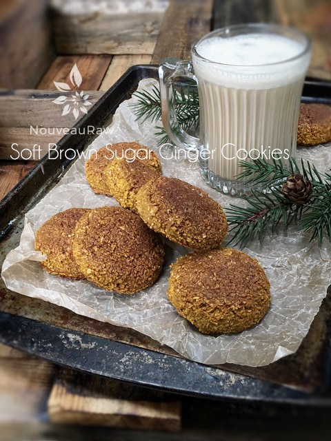

Soft Brown Sugar Ginger Cookies
Soft Brown Sugar Ginger Cookies

~ raw, vegan, gluten-free, nut-free ~
Sweet potatoes are commonly paired with cinnamon, nutmeg, ginger and other warming spices, along with brown sugar or maple syrup. They were a perfect complement to the ginger cookie that I was making this past week.
These cookies turned out thick, moist and dense with flavor. The sweet potato became my hidden ingredient in these amazing cookies. But, I have to share that I used cooked sweet potato and not raw. In the past, I have tried eating raw sweet potato but found it hard for my body to digest. After doing a little research I came to realize that I may not be alone in this and there is a reason why.
Apparently sweet potatoes contain an enzyme inhibitor that blocks the action of trypsin, an enzyme that digests proteins. The trypsin inhibitor prevents the digestion of protein which makes raw sweet potato difficult to digest. The inhibitor is deactivated through the cooking process.
I know that this is a raw recipe site, but the bottom line is that health comes first. So if a food needs to be cooked in order for our body to digest it properly, then so be it. Well, that’s my story and I am sticking to it. :) Cook sweet potatoes in their skin to retain the most nutrients (you can peel after cooking).
Did you know those sweet potatoes have the ability to actually improve blood sugar regulation—even in persons with type 2 diabetes? If boiled or steamed it has a glycemic index (GI) rating of approximately 50. They are a great source of Vitamin A and C which have been known to play an important role in reducing inflammation and restoring cells. They are also a good source of manganese, copper, dietary fiber, Vitamin B6, potassium, and iron. For more nutritional information, click (here)…. no (here), how about (here?), I am so bad… go ahead and click (here)! hehe
Ingredients:
Yields 16 (3 Tbsp) cookies
Preparation:
- In the food processor, fitted with the “S” blade, combine the oat flour, buckwheat flour, coconut nectar, cinnamon, allspice, salt, cloves, and black pepper. Process together making sure all the spices are distributed.
- If you don’t have buckwheat flour prepared but you are itching to make this recipe, you can use all oat flour.
- Add sweet potato, agave, vanilla, lemon juice, stevia, ginger, and water. Process until it forms a thick dough.
- You can use raw pumpkin puree in place of sweet potato if need be.
- If the batter feels too wet, add 1-2 Tbsp of psyllium husks. This will absorb the moisture and give the cookies a lofty feeling to them.
- Each batch of these cookies can differ due to how wet the sweet potato or pumpkin puree is.
- Using 3 Tbsp cookie scoop, level off each scoop and place the cookie on the reflex sheet that comes with the dehydrator. Flatten and then place on the mesh sheet that comes with the dehydrator. Tip: If you don’t have a 3 Tbsp cookie scoop, use any spoon as desired.
- Sprinkle extra raw coconut crystals on top if desired.
- Dehydrate for 1 hour at 145 degrees (F), then decrease to 115 degrees (F) for 10-16 hours. They should be dry on the outside and a bit moist on the inside.
- I found these did well stored in a container with a loose-fitting lid. They are a moist cookie.
Questions you may have…
- Amie Sue, is it possible to purchase raw oats? Yes, indeed. Please read here where can order them (here).
- I always heard that oats contained gluten. Is this true? No, but you need to be aware of the oats that you buy… Please read (here).
- Is it important to soak and dehydrate oats? I think it is, read (here) as to why.
- Do I need to use raw coconut crystals? Nothing is set in stone, but I highly recommend it. It adds a great “brown sugar” flavor to the cookie and balances out the gingerbread-like spices.
- Do I need to use Stevia? No. I used it to elevate the sweet level of the cookie without adding in a larger volume of raw agave. Taste test if you choose not to use and adjust other ingredients as you see fit.
- If you can’t eat oat flour, use fine almond flour in its place.
- If you can’t eat buckwheat flour, use fine almond flour in its place.
- Do not use store-bought coconut flour in place of the other flours. It is too drying.
- Can I use raw sweet potato puree instead of cooked? Yes, I haven’t tried it in this cookie but you are welcome to experiment. I choose cooked because I digest it better than raw sweet potato.
- What can I use in place of the sweet potato? Try pumpkin puree.
Culinary Explanations:
- Why do I start the dehydrator at 145 degrees (F)? Click (here) to learn the reason behind this.
- When working with fresh ingredients it is important to taste test as you build a recipe. Learn why (here).
- Don’t own a dehydrator? Learn how to use your oven (here). I do however truly believe that it is a worthwhile investment. Click (here) to learn what I use.
© AmieSue.com